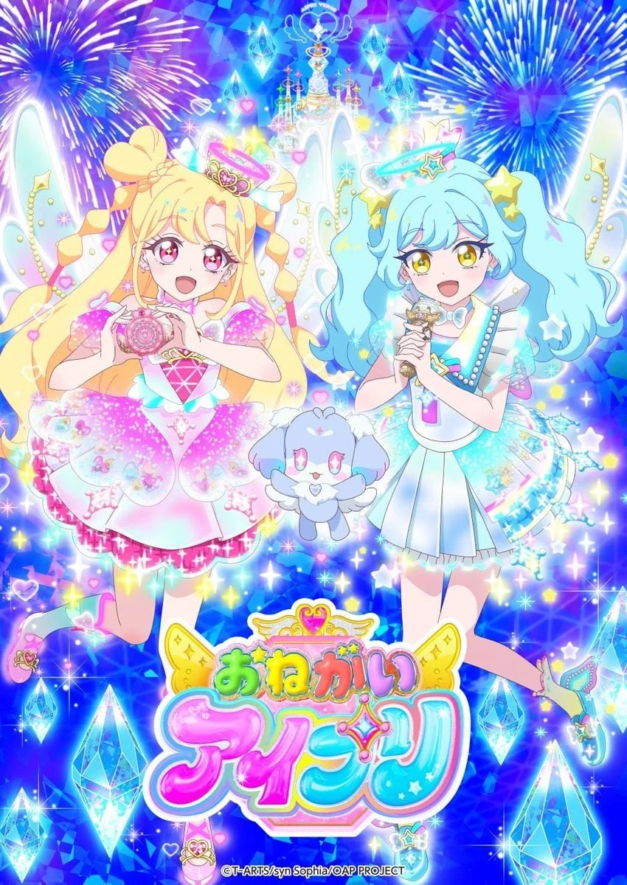

COMPLETE RECORD · Pages 轻量资料
拜托了偶像公主
おねがいアイプリ
别名
- Onegai Aipri
- 形式
- TV
- 首播
- 2026-04-05
- 集数
- 0 集
- 评分
- 4.6
- 评分人数
- 34
SYNOPSIS
简介
ミラーパクトを開いたら、 メイクとコーデでオシャレな私に大変身！
それがアイドルプリンセス・アイプリ！
おねがい町に引っ越してきた好実いのりは、 歌っておどれる"アイプリ"が大好きな中学1年生！
「アイプリになるチャンスをください！」
いのりが広場の女神像にお願いしていると 偶然、人気アイプリのあおいと ぬいぐるみのようなフォーチュに出会ったの。
フォーチュのおねがいを叶えられる アイプリを探しているというあおい。 あおいにもらった特別なミラーパクトを開いて… いのり、あこがれのアイプリデビュー！
あおいとフォーチュは いのりに運命を感じたというけれど… これからアイプリでどんな出会いが待っているのでしょう？
あなたのココロのまんなかで キラッと光る「おねがい」はなぁに？
キラキラライブで みんなの「おねがい」かなえちゃお！
EPISODE LOG
正片章节
已收录 20 条正片章节
- 1おねがい!アイプリになって 首播：2026-04-05
- 2その夢、かなえちゃお♪ 首播：2026-04-12
- 3たったひとつのだいすき 首播：2026-04-19
- 4おともだちがアイプリ!? 首播：2026-04-26
- 5はじめてのアイプリフェス! 首播：2026-05-03
- 6つなごう!ゆめとだいすき 首播：2026-05-10
- 7ふたつのおねがい 首播：2026-05-17
- 8いいたかったこと 首播：2026-05-24时长：24 分钟
- 9ゆうきのつばさで 首播：2026-05-31
- 10ちいさなおともだち 首播：2026-06-07
- 11いのりのたからもの 首播：2026-06-14时长：24 分钟
- 12ぐみとおりびあ 首播：2026-06-21
- 13はばたけ!アイプリフェス! 首播：2026-06-28
- 14わたしのハイセンス! 首播：2026-07-05时长：24 分钟
- 15情熱のアイプリ 首播：2026-07-12时长：24 分钟
- 16情熱のトップ・パワー 首播：2026-07-19时长：24 分钟
- 17あおいとおねがいかなえ隊 首播：2026-07-26时长：24 分钟
- 18第18话 首播：2026-08-02时长：24 分钟
- 19第19话 首播：2026-08-09时长：24 分钟
- 20第20话 首播：2026-08-16时长：24 分钟